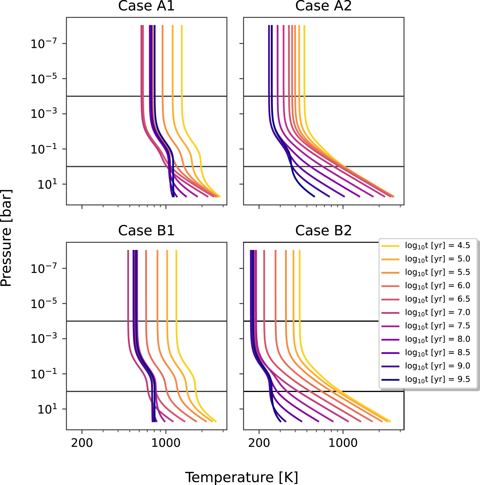
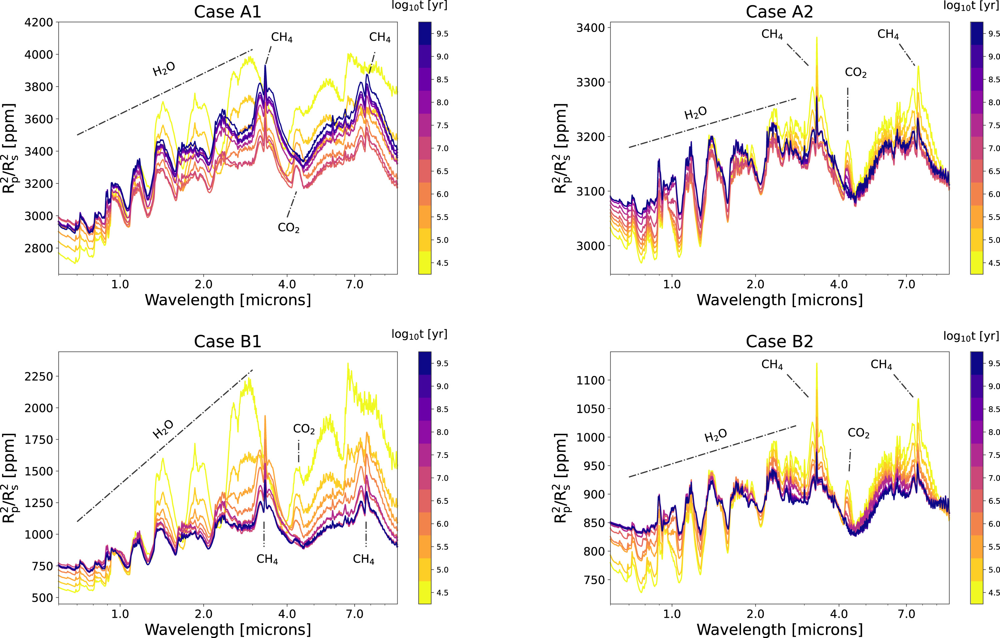

Project Description

For my Final Master's Thesis at Leiden University (the MSc program requires students to write two theses), I investigated how the thermal evolution affects the atmospheric chemical composition of various hydrogen-dominated gaseous planets.
I used the Modules for Experiments in Stellar Astrophysics (MESA) evolutionary code to evolve four different planet-star systems and the analytical approximation by Heng et al. (2014) to calculate the planets' temperature profile, which is seen on the right.
To model the evolving chemical abundances, I used the VULCAN disequilibrium chemistry code. These time-dependent abundances were then passed to the petitRADTRANS radiative transfer code to generate transmission spectra throughout the planets' evolution.
Main Findings
My main goal was to identify time-dependent features on the transmission spectra that could provide insights into the formation and evolution of these gaseous planets.
The simulated spectra show several evolving features over time (bottom panel). One of the most prominent evolving features was the CO₂ absorption feature at ∼4.3 μm, which favours high temperatures and therefore was highly sensitive to changes in the planet’s internal temperature and the incoming radiation from the host star.
For further details, please read my paper:
Kecskeméthy, V., Louca, A., Miguel, Y. (2024). Temporal Variability in Transmission Spectra of H2-Dominated Exoplanets: The Influence of Thermal Evolution and Stellar Irradiation on Atmospheric Composition. New Astronomy, Volume 113, id.102296, December 2024.
DOI: 10.1016/j.newast.2024.102296
